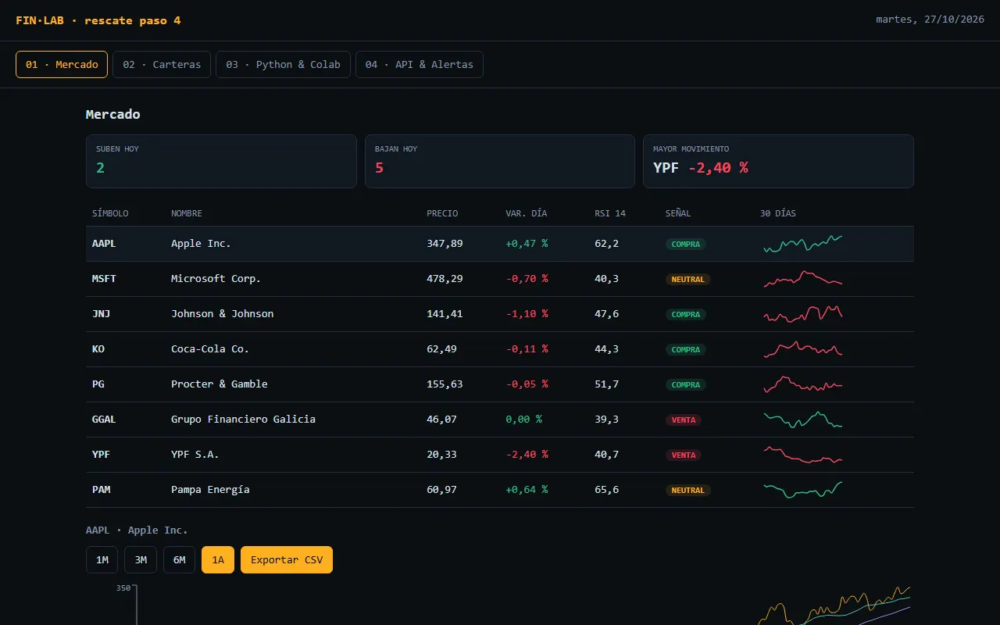

PASO 4 · DONDE MÁS SE EQUIVOCA LA IA
Indicadores y señales: SMA, EMA y RSI
Entra el análisis técnico. Es el paso donde la IA más se equivoca: confunde el RSI simple con el de Wilder o calcula medias con menos datos de los que dice. Por eso este paso termina con la primera verificación en una planilla.
Qué van a lograr
Dos columnas nuevas en la tabla (RSI y Señal), las medias móviles dibujadas en el gráfico y un botón para descargar los datos en CSV. La señal sigue la misma regla que la terminal final:
| SI LAS MEDIAS CORTAS… | SEÑAL |
|---|---|
| están las dos por encima de las largas (SMA20 > SMA50 y EMA12 > EMA26) | COMPRA |
| están las dos por debajo de las largas | VENTA |
| no se ponen de acuerdo | NEUTRAL |
En palabras: si las dos medias “cortas” (las que miran menos días) están por encima de las “largas”, el precio viene subiendo; si están por debajo, viene bajando; si no se ponen de acuerdo, no hay señal clara.
Así va quedando
- Esqueleto (ya está)
- Datos (ya está)
- Mercado (ya está)
- Indicadores (este paso)
- Carteras (todavía no)
- API (todavía no)
- Colab (todavía no)
- n8n (todavía no)
- #/guiado (todavía no)
- Clave (todavía no)
- Modelo (todavía no)
- Agente (todavía no)
- Consejo (todavía no)
- MCP (todavía no)

El prompt
Paso 4. Agregá indicadores técnicos, cada uno en su propia función con la fórmula comentada: - sma(precios, n): media móvil simple - ema(precios, n): media móvil exponencial con alfa = 2/(n+1) - rsi(precios, 14): RSI de Wilder. Arranque: promedio simple de las primeras 14 subas y de las primeras 14 bajas. Después, cada día: promedio = (promedio anterior × 13 + valor de hoy) / 14. Resultado entre 0 y 100 - signalOf(): COMPRA si SMA20 > SMA50 y EMA12 > EMA26; VENTA si ambas son menores; si no, NEUTRAL Mostralos así: - en la tabla de Mercado, dos columnas nuevas: RSI 14 (resaltado si es > 70 o < 30) y Señal (etiqueta de color) - en el gráfico grande, las líneas SMA20 y SMA50 superpuestas al precio, con leyenda Además agregá un botón "Exportar CSV" que descargue fecha, cierre, SMA20, SMA50 y RSI del activo seleccionado, con punto como separador decimal, para que podamos verificar los cálculos en una planilla. Los días sin datos suficientes van vacíos, no en cero. [pegar el archivo completo]
Qué hacer, clic por clic
- Peguen el prompt y el archivo actual, guarden la respuesta y abran la página.
- Elijan un activo en la tabla y toquen Exportar CSV. Se descarga un archivo en la carpeta Descargas.
- Abran Google Sheets (sheets.new) → Archivo → Importar → Subir → elijan el CSV → Reemplazar hoja actual.
- En una celda libre de la última fila escriban =PROMEDIO(B…:B…) con los últimos 20 cierres (por ejemplo, =PROMEDIO(B234:B253) si los datos terminan en la fila 253).
- Comparen con la columna SMA20 de esa misma fila.
- Guarden finlab-v4.html y el CSV: lo van a usar en el paso 7.
Cómo comprobar
- SMA20 en la planilla: el =PROMEDIO() de los últimos 20 cierres coincide con la SMA20 de la última fila (como mucho, difiere en el último decimal).
- Coherencia de la señal: elijan un activo con señal COMPRA y miren el gráfico. Al final, la SMA20 tiene que estar por encima de la SMA50.
- Las primeras 49 filas del CSV no tienen SMA50 (vacío, no cero). Si dicen 0, la IA calculó mal.
- RSI entre 0 y 100: ningún valor sale de ese rango.
Si algo falla
En el CSV, la SMA20 del último día da X, pero en la planilla me da Y con estos 20 cierres: [pegar los 20 cierres] Encontrá el error en la función sma, mostrame el cálculo paso a paso con estos números y devolveme el archivo completo corregido.
La idea, en un gráfico
Para entender más · cómo funciona y palabras nuevas
El flujo: de los cierres a la señal
Los precios de cierre
La serie del activo elegido.
Los promedios móviles
De 20 y 50 días (SMA) y de 12 y 26 días (EMA).
El RSI
Compara subas y bajas de 14 días; va de 0 a 100.
La señal
¿Los promedios cortos están por encima de los largos? COMPRA, VENTA o NEUTRAL.
La verificación
Exportan un CSV y recalculan un promedio a mano en Google Sheets.
Palabras nuevas de este paso
- SMA
- Media móvil simple: promedio de los últimos N cierres. Más →
- EMA
- Media móvil que pesa más lo reciente. Más →
- RSI 14 (Wilder)
- Fuerza de las subas vs. bajas, de 0 a 100. Más →
- Señal
- Etiqueta que resume una regla; no es una recomendación. Más →
- CSV
- Una tabla como texto, que abre cualquier planilla. Más →